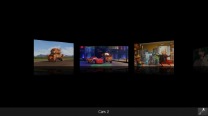
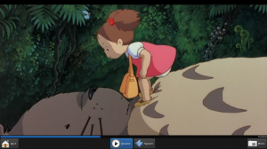

I have (too) many side projects. Many won't ever be formally released. Today I am releasing one of them: KidMP, a kid-friendly media player.
This project started with an unusual need: for a long time, my daughter Clara has been watching movies on my laptop while we were traveling. Depending on who was driving, either my wife or I would start the movie on the laptop for her, then pass her the laptop once the movie has started.
This was not the most practical setup, but it worked reasonably well. A few years ago however, a schedule conflict prevented me from going on vacation with the rest of the family. As my wife would be driving alone, there was no way she could setup the laptop for my daughter. The day before they left, I started a quick hack: a media player which would be usable by someone who can't read, and is not (yet!) computer-fluent. KidMP was born.
Over time, I worked on and off on this project, improving it after each family trip. Today I think KidMP is in a good-enough state to be released. It has been battle-field tested during several trips, used by the whole family, I believe it works reasonably well.
Quoting the README, here are the features which makes KidMP a kid-friendly player:
It is designed to be used on a laptop in situations where using the touchpad is not easy: laptop is not on a table and kids are not precise enough with a touchpad. That is why it is primarily designed to be used with the keyboard.
Early versions used covers from IMDB, but I realized kids have difficulties recognizing them, so I added a way to grab screenshots from the actual movie and use them as thumbnails. I first thought I would have to do all screenshoting myself, but it turns out kids love this feature: every once in a while, Clara will go through the movie collection and change all the pictures!
Selecting movies is done through a cover-flow like strip:
When a movie is playing, pressing Space pauses playback and brings a toolbar at the bottom of the screen:
The application is written in PyKDE4, using a mix of QML (for the movie selector) and regular widgets. You can get a tarball from kde-apps.org or clone the git repository.
I hope your kids enjoy KidMP!
{kind=link}
{kind=link}